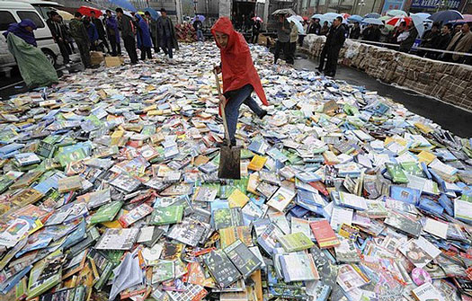
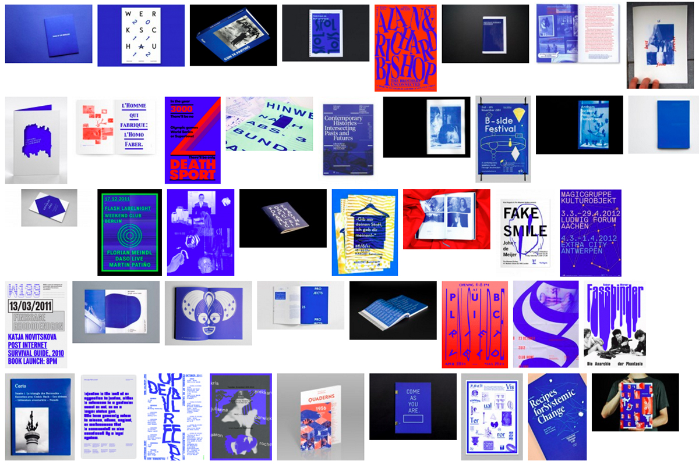
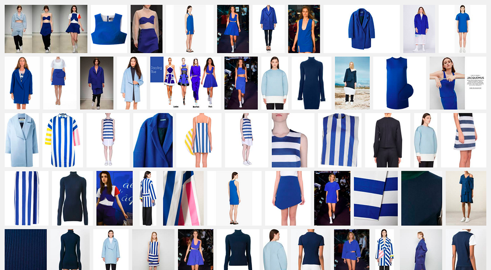
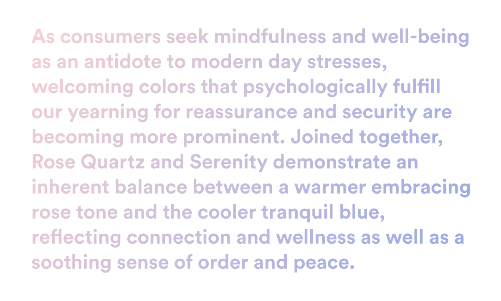
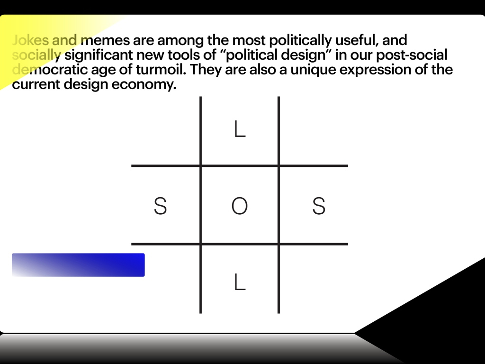

The poor image is a copy in motion. Its quality is bad, its resolution substandard. As it accelerates, it deteriorates. It is a ghost of an image, a preview, a thumbnail, an errant idea, an itinerant image distributed for free, squeezed through slow digital connections, compressed, reproduced, ripped, remixed, as well as copied and pasted into other channels of distribution.
The poor image is a rag or a rip; an AVI or a JPEG, a lumpen proletarian in the class society of appearances, ranked and valued according to its resolution. The poor image has been uploaded, downloaded, shared, reformatted, and reedited. It transforms quality into accessibility, exhibition value into cult value, films into clips, contemplation into distraction. The image is liberated from the vaults of cinemas and archives and thrust into digital uncertainty, at the expense of its own substance. The poor image tends towards abstraction: it is a visual idea in its very becoming.
The poor image is an illicit fifth-generation bastard of an original image. Its genealogy is dubious. Its filenames are deliberately misspelled. It often defies patrimony, national culture, or indeed copyright. It is passed on as a lure, a decoy, an index, or as a reminder of its former visual self. It mocks the promises of digital technology. Not only is it often degraded to the point of being just a hurried blur, one even doubts whether it could be called an image at all. Only digital technology could produce such a dilapidated image in the first place.
Poor images are the contemporary Wretched of the Screen, the debris of audiovisual production, the trash that washes up on the digital economies’ shores. They testify to the violent dislocation, transferrals, and displacement of images—their acceleration and circulation within the vicious cycles of audiovisual capitalism. Poor images are dragged around the globe as commodities or their effigies, as gifts or as bounty. They spread pleasure or death threats, conspiracy theories or bootlegs, resistance or stultification. Poor images show the rare, the obvious, and the unbelievable—that is, if we can still manage to decipher it.
Shoveling pirated DVDs in Taiyuan, Shanxi province, China, April 20, 2008. From here.
Aesthetics can be understood as the system of a priori forms determining what presents itself to sense experience. It is a delimitation of spaces and times, of the visible and the invisible, of speech and noise, that simultaneously determines the place and the stakes of politics as a form of experience. Politics revolves around what is seen and what can be said about it, around who has the ability to see and the talent to speak, around the properties of spaces and the possibilities of time. (Jacques Rancière, The Politics of Aesthetics)
Questions of representation are central to the practice of graphic design. An understanding of who we are speaking for, and who we are speaking to, is the starting point of any design brief. It is through this role of mediation, expressed as aesthetic form, that design enacts its power and responsibility. However, this mediation often happens uncritically, guided by a designer’s intuition, stylistic trends, and the instrumental framework of marketing and PR concerns. A multiplicity of factors, conscious and unconscious, play into a designer’s aesthetic choices of imagery, typography, composition and colour. And as much as some might argue to the contrary, none of these choices are neutral.
In the case of colour, Pantone Inc. holds incredible influence with their increasingly marketed and mediatised Colour of the Year campaigns. Purportedly determined through a prescient reading of the cultural zeitgeist (by a select cabal of colour specialists), it is important to understand that the company, and the industry it serves, have their own specific interests and agendas that drive these selections. Pantone’s choice of “Rose Quartz” and “Serenity” as the 2016 Colour of the Year is the most insidious move by this colour-industrial-complex since “Blue Iris” in 2008. As with “Blue Iris”, Pantone has once again mined the subcultural landscape and used their monopoly within the creative industries to propagate their colour properties to the world.
From IK Blue to Blue Iris
Pantone was on point in 2008, presenting a slightly muted version of the IK Blue (International Klein)/RGB Blue trend that evolved out of the Dutch “default design” approach of the early 2000s. Default design advocated against the smooth surfaces of graphic professionalism, employing low-res imagery, system fonts, crude layouts, and the standard web link hex-colour #0000FF. It incorporated a self-referential criticism into its aesthetic, and the prominent use of RGB Blue became a clear signifier of this. The colour was carried forward with the emergence of a vaguely defined “critical graphic design” aesthetic, shifting between Default, IK, and Reflex Blue, and it was often used monochromatically, in large flat swathes that were both vivid and jarring.
Though IK Blue and RGB Default Blue are not the same, their intense visceral effect is similar, stemming from the colours’ physical/digital materiality; Klein’s blue was unique due to the synthetic resin binder which allowed the pigment to maintain its clarity, whereas Default Blue is as pure a blue as the RGB spectrum can achieve. Referenced in William Gibson’s 2010 novel Zero History, the character Hubertus Bigend has a suit made entirely of material in IK Blue. He states that he wears this because the intensity of the colour makes other people uncomfortable, and because he is amused by the difficulty of reproducing the colour on a computer monitor. Gibson, an astute cultural observer, used this reference to acknowledge its avant-garde popularity while pointing to the inherent subversive quality of the colour.
Jacquemus Blue on Google Images
The mainstreaming of “Blue Iris” by Pantone softened the subversive punch of IK Blue (which by 2008 was already an identifiable commodity in contemporary art and fashion circles), further bolstering its popularity amongst designers and the consumer population at large.
Pantone Colour of the Year 2016: Rose Quartz and Serenity
“Rose Quartz” and “Serenity” (hereafter abbreviated as RQ+S) present a far more nefarious situation. There’s no doubt that Pantone’s trend forecasters/cool hunters are once again on point (much more so than last year’s Marsala), yet anyone who has spent a little too much time on Tumblr over the last few years probably could have seen this coming. The tonal pink and blue palette has been growing exponentially in popularity online since the emergence (circa 2010-11), purported death (circa 2012), and expanding influence of the micro-cultures of Seapunk, and its successor, Vaporwave, as part of a more broadly defined subculture of internet-fuelled art employing what can be described as a Tumblr aesthetic.
The popular use of these colours, and specifically their combined usage, has emerged out of a tumultuously contested subcultural space. Pantone’s conceptual framing of RQ+S is disingenuous at best, and once one digs a little deeper, can be seen to represent a clearly reactionary political force.
We are told this is a time for tough decisions and certainly not a time for jokes. Governments of liberals, centre-right conservatives and social democrats have declared austerity throughout Europe. Their policies are a cocktail of the once-opposed extremes of their respective ideologies: there will be reduced public services (hail neoliberals), and there will, at the same time, be higher taxes (hail social democrats). Injustice is now fair.
Austerity is promoted and imposed by a techno-financial superclass of managers. The austerity elite does not live in the countries where its regimes are imposed, and it most certainly does not live in the social circles affected by it. Where its rule is the harshest this superclass goes by the name of the troika. Comprising the International Monetary Fund (IMF), the European Central Bank (ECB) and the European Commission (EC), this roaming triumvirate of experts specialises in summary judgments of EU countries.
Austerity is potentially unlimited. It has no boundaries. No austerity elite is willing to say: until here, and no further. The humanitarian crisis of austerity is none of its business.
In unleashing austerity on its constituents, the political superclass has opened up a Pandora’s box of disastrous consequences. It has awakened and emboldened powerful enemies. Not just of austerity, but of democracy itself.
From Metahaven’s talk Memes, Jokes and Jesters at Typo Berlin, May 2012.